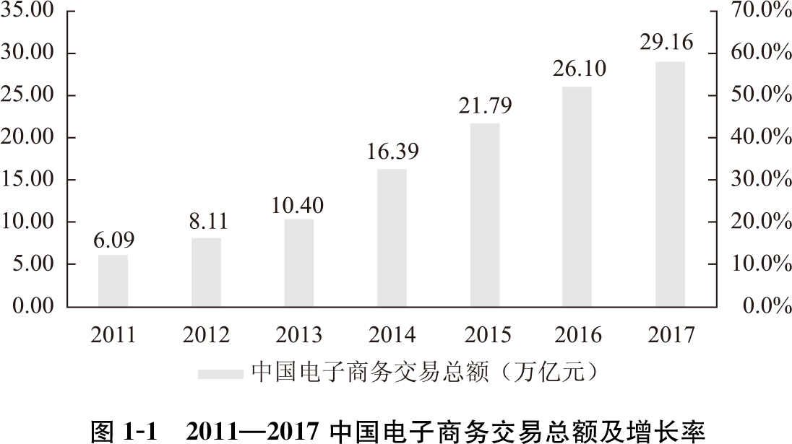
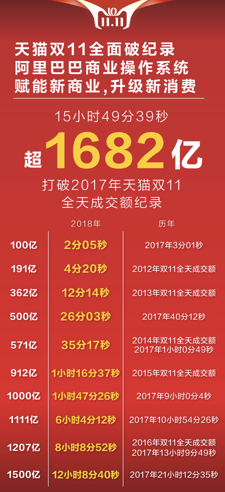
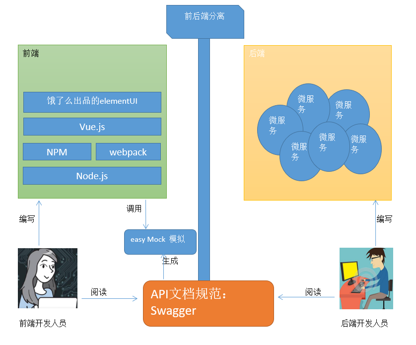
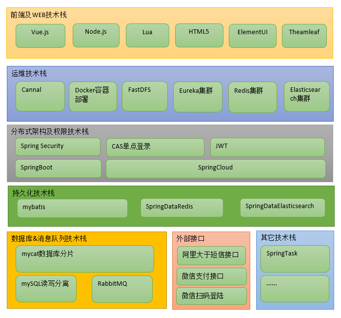
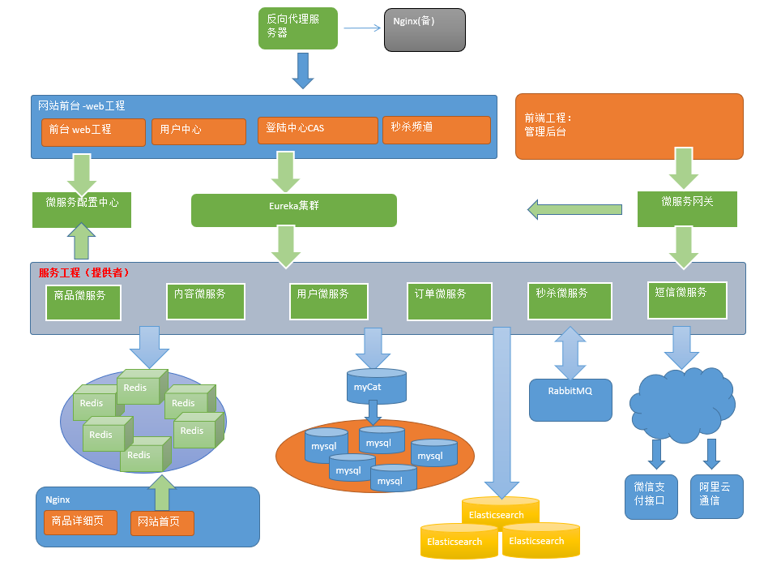

第1章 框架搭建
学习目标
目标1：了解电商的技术特点和主要电商模式
目标2：理解畅购的需求与系统设计
目标3：能够完成畅购工程框架的搭建
目标4：能够完成商品微服务品牌增删改查功能
1. 走进电商
1.1 电商行业分析
近年来，世界经济正向数字化转型，大力发展数字经济成为全球共识。党的十九大报告明确提出要建设“数字中国”“网络强国”，我国数字经济发展进入新阶段，市场规模位居全球第二，数字经济与实体经济深度融合，有力促进了供给侧结构性改革。电子商务是数字经济的重要组成部分，是数字经济最活跃、最集中的表现形式之一。2017年，在政府和市场共同推动下，我国电子商务发展更加注重效率、质量和创新，取得了一系列新的进展，在壮大数字经济、共建“一带一路”、助力乡村振兴、带动创新创业、促进经济转型升级等诸多方面发挥了重要作用，成为我国经济增长的新动力。 2017年，我国电子商务交易规模继续扩大，并保持高速增长态势。国家统计局数据显示，2017年全国电子商务交易额达29.16万亿元，同比增长11.7%；网上零售额7.18万亿元，同比增长32.2%。我国电子商务优势进一步扩大，网络零售规模全球最大、产业创新活力世界领先。数据显示，截止2017年底，全国网络购物用户规模达5.33亿，同比增长14.3%；非银行支付机构发生网络支付金额达143.26万亿元，同比增长44.32%；全国快递服务企业业务量累计完成400.6亿件，同比增长28%；电子商务直接从业人员和间接带动就业达4250万人。


1.2 电商系统技术特点
技术新
技术范围广
分布式
高并发、集群、负载均衡、高可用
海量数据
业务复杂
系统安全
1.3 主要电商模式
B2B
xB2B （ Business to Business）是指进行电子商务交易的供需双方都是商家（或企业、公司），她（他）们使用了互联网的技术或各种商务网络平台，完成商务交易的过程。电子商务是现代 B2B marketing的一种具体主要的表现形式。案例：阿里巴巴、慧聪网
C2C
xxxxxxxxxxC2C即 Customer（Consumer） to Customer（Consumer），意思就是消费者个人间的电子商务行为。比如一个消费者有一台电脑，通过网络进行交易，把它出售给另外一个消费者，此种交易类型就称为C2C电子商务。案例：咸鱼、转转、瓜子二手车
B2C
xxxxxxxxxxB2C是Business-to-Customer的缩写，而其中文简称为“商对客”。“商对客”是电子商务的一种模式，也就是通常说的直接面向消费者销售产品和服务商业零售模式。这种形式的电子商务一般以网络零售业为主，主要借助于互联网开展在线销售活动。B2C即企业通过互联网为消费者提供一个新型的购物环境——网上商店，消费者通过网络在网上购物、网上支付等消费行为。案例：唯品会、乐蜂网
C2B
xxxxxxxxxxC2B（Consumer to Business，即消费者到企业），是互联网经济时代新的商业模式。这一模式改变了原有生产者（企业和机构）和消费者的关系，是一种消费者贡献价值（Create Value）， 企业和机构消费价值（Consume Value）。C2B模式和我们熟知的供需模式（DSM, Demand SupplyModel）恰恰相反，真正的C2B 应该先有消费者需求产生而后有企业生产，即先有消费者提出需求，后有生产企业按需求组织生产。通常情况为消费者根据自身需求定制产品和价格，或主动参与产品设计、生产和定价，产品、价格等彰显消费者的个性化需求，生产企业进行定制化生产。案例：海尔商城、 尚品宅配
O2O
xxxxxxxxxxO2O即Online To Offline（在线离线/线上到线下），是指将线下的商务机会与互联网结合，让互联网成为线下交易的平台，这个概念最早来源于美国。O2O的概念非常广泛，既可涉及到线上，又可涉及到线下,可以通称为O2O。主流商业管理课程均对O2O这种新型的商业模式有所介绍及关注。案例：美团、饿了吗
F2C
xxxxxxxxxxF2C指的是Factory to customer，即从厂商到消费者的电子商务模式。
B2B2C
xxxxxxxxxxB2B2C是一种电子商务类型的网络购物商业模式，B是BUSINESS的简称，C是CUSTOMER的简称，第一个B指的是商品或服务的供应商，第二个B指的是从事电子商务的企业，C则是表示消费者。案例：京东商城、天猫商城
2. 畅购-需求分析与系统设计
2.1 需求分析
网站前台静态原型演示，打开资料\静态原型\前台，首页index.html

网站管理后台静态原型演示
打开资料\静态原型\后台,首页index.html

2.2 系统设计
2.2.1 前后端分离
网站后台的部分采用前后端分离方式。
以前的JavaWeb项目大多数都是java程序员又当爹又当妈，又搞前端，又搞后端。随着时代的发展，渐渐的许多大中小公司开始把前后端的界限分的越来越明确，前端工程师只管前端的事情，后端工程师只管后端的事情。正所谓术业有专攻，一个人如果什么都会，那么他毕竟什么都不精。
对于后端java工程师：
把精力放在设计模式，spring+springmvc，linux，mysql事务隔离与锁机制，mongodb，http/tcp，多线程，分布式架构，弹性计算架构，微服务架构，java性能优化，以及相关的项目管理等等。
对于前端工程师：
把精力放在html5，css3，vuejs，webpack，nodejs，Google V8引擎，javascript多线程，模块化，面向切面编程，设计模式，浏览器兼容性，性能优化等等。

我们在本课程中提供与项目课程配套的管理后台的前端代码，但是不讲解前端的内容。这样我们会将更多的精力放在后端代码的开发上！
2.2.2 技术架构

2.2.3 系统架构图

3. 畅购-框架搭建
3.1 环境准备
将资源中的虚拟机进行安装（相关的docker容器安装已经安装完毕,注意号段改为200）
3.2 项目结构说明

结构说明：
changgou_gateway
xxxxxxxxxx网关模块，根据网站的规模和需要，可以将综合逻辑相关的服务用网关路由组合到一起。在这里还可以做鉴权和限流相关操作。
changgou_service
xxxxxxxxxx微服务模块，该模块用于存放所有独立的微服务工程。
changgou_service_api
xxxxxxxxxx对应工程的JavaBean、Feign、以及Hystrix配置，该工程主要对外提供依赖。
changgou_transaction_fescar
xxxxxxxxxx分布式事务模块，将分布式事务抽取到该工程中，任何工程如需要使用分布式事务，只需依赖该工程即可。
changgou_web
xxxxxxxxxxweb服务工程，对应功能模块如需要调用多个微服务，可以将他们写入到该模块中，例如网站后台、网站前台等
3.3 父工程搭建
3.3.1 一级父工程搭建
创建父工程 changgou_parent,pom.xml文件中增加配置
xxxxxxxxxx<parent> <groupId>org.springframework.boot</groupId> <artifactId>spring-boot-starter-parent</artifactId> <version>2.1.4.RELEASE</version></parent><properties> <skipTests>true</skipTests></properties><!--依赖包--><dependencies> <!--测试包--> <dependency> <groupId>org.springframework.boot</groupId> <artifactId>spring-boot-starter-test</artifactId> <scope>test</scope> </dependency></dependencies><dependencyManagement> <dependencies> <dependency> <groupId>org.springframework.cloud</groupId> <artifactId>spring-cloud-dependencies</artifactId> <version>Greenwich.SR1</version> <type>pom</type> <scope>import</scope> </dependency> </dependencies></dependencyManagement>删除src文件夹
3.3.2 二级父工程模块搭建
创建changgou_gateway、changgou_service、changgou_service_api、changgou_web工程，工程全部为pom工程，并将所有工程的src文件删除。
3.4 Eureka微服务搭建
（1）pom.xml依赖
创建模块changgou_eureka，pom.xml引入依赖
xxxxxxxxxx<dependencies> <dependency> <groupId>org.springframework.cloud</groupId> <artifactId>spring-cloud-starter-netflix-eureka-server</artifactId> </dependency></dependencies>（2） appliation.yml配置
创建配置文件application.yml
xxxxxxxxxxserver port6868eureka client register-with-eurekafalse #是否将自己注册到eureka中 fetch-registryfalse #是否从eureka中获取信息 service-url defaultZonehttp//127.0.0.1$server.port/eureka/（3）启动类配置
创建包com.changgou.eureka 包下创建启动类
xxxxxxxxxxpublic class EurekaApplication { public static void main(String[] args) { SpringApplication.run(EurekaApplication.class); }}3.5 公共模块搭建
3.5.1 全局公共模块
（1）pom.xml依赖
创建公共子模块changgou_common，pom.xml引入依赖
xxxxxxxxxx<dependencies> <!--web起步依赖--> <dependency> <groupId>org.springframework.boot</groupId> <artifactId>spring-boot-starter-web</artifactId> </dependency> <!-- redis 使用--> <dependency> <groupId>org.springframework.boot</groupId> <artifactId>spring-boot-starter-data-redis</artifactId> </dependency> <dependency> <groupId>com.alibaba</groupId> <artifactId>fastjson</artifactId> <version>1.2.51</version> </dependency> <dependency> <groupId>org.springframework.cloud</groupId> <artifactId>spring-cloud-starter-netflix-eureka-client</artifactId> </dependency> <dependency> <groupId>org.springframework.cloud</groupId> <artifactId>spring-cloud-starter-openfeign</artifactId> </dependency></dependencies>（2）常用对象
创建com.changgou.entity包 ，包下封装相关公共实体类。将'资源/common_entity'下的相关资源导入工程
xxxxxxxxxxpackage com.changgou.entity;/** * 返回结果实体类 */public class Result<T> { private boolean flag;//是否成功 private Integer code;//返回码 private String message;//返回消息 private T data;//返回数据 public Result(boolean flag, Integer code, String message, Object data) { this.flag = flag; this.code = code; this.message = message; this.data = (T)data; } public Result(boolean flag, Integer code, String message) { this.flag = flag; this.code = code; this.message = message; } public Result() { this.flag = true; this.code = StatusCode.OK; this.message = "执行成功"; } //getter and setter..}建立类用于承载分页的数据结果
xxxxxxxxxx/** * 分页结果类 */public class PageResult<T> { private Long total;//总记录数 private List<T> rows;//记录 public PageResult(Long total, List<T> rows) { this.total = total; this.rows = rows; } public PageResult() { } //getter and setter ......}创建返回状态码实体类
xxxxxxxxxx/** * 返回码 */public class StatusCode { public static final int OK=20000;//成功 public static final int ERROR =20001;//失败 public static final int LOGINERROR =20002;//用户名或密码错误 public static final int ACCESSERROR =20003;//权限不足 public static final int REMOTEERROR =20004;//远程调用失败 public static final int REPERROR =20005;//重复操作}3.5.2 数据访问公共模块搭建
这个公共模块是连接mysql数据库的公共微服务模块，所以需要连接mysql的微服务都继承自此工程。
创建公共模块changgou_common_db，pom文件引入依赖
xxxxxxxxxx<dependencies> <dependency> <groupId>com.changgou</groupId> <artifactId>changgou_common</artifactId> <version>1.0-SNAPSHOT</version> </dependency> <!--通用mapper起步依赖--> <dependency> <groupId>tk.mybatis</groupId> <artifactId>mapper-spring-boot-starter</artifactId> <version>2.0.4</version> </dependency> <!--MySQL数据库驱动--> <dependency> <groupId>mysql</groupId> <artifactId>mysql-connector-java</artifactId> </dependency> <!--mybatis分页插件--> <dependency> <groupId>com.github.pagehelper</groupId> <artifactId>pagehelper-spring-boot-starter</artifactId> <version>1.2.3</version> </dependency></dependencies>
3.6 商品微服务搭建
3.6.1 商品微服务API工程搭建
（1）changgou_service_api 引入依赖
xxxxxxxxxx<dependencies> <dependency> <groupId>org.springframework.cloud</groupId> <artifactId>spring-cloud-starter-openfeign</artifactId> <scope>provided</scope> </dependency> <dependency> <groupId>javax.persistence</groupId> <artifactId>persistence-api</artifactId> <version>1.0</version> <scope>compile</scope> </dependency></dependencies>（2）changgou_service_api 下创建changgou_service_goods_api子模块并添加common依赖
3.6.2 微服务工程搭建
（1）changgou_service下创建changgou_service_goods子模块 ，pom.xml引入依赖
xxxxxxxxxx<dependencies> <dependency> <groupId>com.changgou</groupId> <artifactId>changgou_common_db</artifactId> <version>1.0-SNAPSHOT</version> </dependency> <dependency> <groupId>com.changgou</groupId> <artifactId>changgou_service_goods_api</artifactId> <version>1.0-SNAPSHOT</version> </dependency> <dependency> <groupId>org.springframework.cloud</groupId> <artifactId>spring-cloud-starter-netflix-eureka-client</artifactId> </dependency></dependencies>（2）创建配置文件application.yml
xxxxxxxxxxserver port9011spring application namegoods datasource driver-class-namecom.mysql.jdbc.Driver urljdbcmysql//192.168.200.1283306/changgou_goods?useUnicode=true&characterEncoding=UTF-8&serverTimezone=UTC usernameroot passwordrooteureka client service-url defaultZonehttp//127.0.0.16868/eureka instance prefer-ip-addresstruefeign hystrix enabledtrue #hystrix 配置hystrix command default execution timeout #如果enabled设置为false，则请求超时交给ribbon控制 enabledtrue isolation strategySEMAPHORE（3）创建包com.changgou.goods 包下创建启动类
xxxxxxxxxx(basePackages = {"com.changgou.goods.dao"})public class GoodsApplication { public static void main(String[] args) { SpringApplication.run(GoodsApplication.class); }}注意：@MapperScan是tk.mybatis.spring.annotation包下的，用于扫描Mapper接口
4. 商品微服务-品牌增删改查
4.1 需求分析
创建商品微服务，实现对品牌表的增删改查功能。具体包括
（1）查询全部列表数据
（2）根据ID查询实体数据
（3）增加
（4）修改
（5）删除
（6）条件查询
（7）分页查询
（8）分页+条件查询
4.2 表结构分析
| 字段名称 | 字段含义 | 字段类型 | 字段长度 | 备注 |
|---|---|---|---|---|
| id | 品牌id | INT | ||
| name | 品牌名称 | VARCHAR | ||
| image | 品牌图片地址 | VARCHAR | ||
| letter | 品牌的首字母 | CHAR | ||
| seq | 排序 | INT |
4.3 代码实现
4.3.1 品牌列表
（1）在changgou_service_goods_api创建com.changgou.goods.pojo包，包下创建Brand实体类
xxxxxxxxxx(name="tb_brand")public class Brand implements Serializable{ private Integer id;//品牌id private String name;//品牌名称 private String image;//品牌图片地址 private String letter;//品牌的首字母 private Integer seq;//排序 // getter and setter .....(省略)}@Table和@Id都是JPA注解，@Table用于配置表与实体类的映射关系，@Id用于标识主键属性。
（2）Dao创建
在changgou_service_goods微服务下创建com.changgou.goods.dao.BrandMapper接口，代码如下：
xxxxxxxxxxpublic interface BrandMapper extends Mapper<Brand> {}继承了Mapper接口，就自动实现了增删改查的常用方法。
（3）业务层
创建com.changgou.goods.service.BrandService接口，代码如下：
xxxxxxxxxxpublic interface BrandService { /*** * 查询所有品牌 * @return */ public List<Brand> findAll();}创建com.changgou.goods.service.impl包，包下创建服务实现类 BrandServiceImpl，代码如下：
xxxxxxxxxxpublic class BrandServiceImpl implements BrandService { private BrandMapper brandMapper; public List<Brand> findAll() { return brandMapper.selectAll(); } }（3）控制层
控制层 com.changgou.goods包下创建controller包 ，包下创建类
xxxxxxxxxx("/brand")public class BrandController { private BrandService brandService; public Result findAll(){ List<Brand> brandList = brandService.findAll(); return new Result(true, StatusCode.OK,"查询成功",brandList) ; } }4.3.2 根据ID查询品牌
（1） 业务层接口
修改com.changgou.goods.service.BrandService接口，添加根据ID查询品牌数据方法，代码如下：
xxxxxxxxxx/** * 根据ID查询 * @param id * @return */public Brand findById(Integer id);（2）业务层实现
修改com.changgou.goods.service.impl.BrandServiceImpl新增方法，代码如下：
xxxxxxxxxx/** * 根据ID查询 * @param id * @return */public Brand findById(Integer id){ return brandMapper.selectByPrimaryKey(id);}（3） 控制层
BrandController新增方法
xxxxxxxxxx/*** * 根据ID查询品牌数据 * @param id * @return */("/{id}")public Result findById( Integer id){ Brand brand = brandService.findById(id); return new Result(true,StatusCode.OK,"查询成功",brand);}4.3.3 新增品牌
（1）业务层接口 修改com.changgou.goods.service.BrandService，新增方法
xxxxxxxxxx/*** * 新增品牌 * @param brand */public void add(Brand brand);（2）业务层实现 修改com.changgou.goods.service.impl.BrandServiceImpl，新增增加品牌方法代码如下：
xxxxxxxxxx/** * 增加 * @param brand */public void add(Brand brand){ brandMapper.insertSelective(brand);}（3）控制层 BrandController新增方法
xxxxxxxxxx/*** * 新增品牌数据 * @param brand * @return */public Result add( Brand brand){ brandService.add(brand); return new Result(true,StatusCode.OK,"添加成功");}4.3.4 修改品牌
（1） 业务层接口
需改com.changgou.goods.service.BrandService,添加修改品牌方法，代码如下：
xxxxxxxxxx/*** * 修改品牌数据 * @param brand */public void update(Brand brand);（2）业务层实现 修改com.changgou.goods.service.impl.BrandServiceImpl，添加修改品牌方法，代码如下：
xxxxxxxxxx/** * 修改 * @param brand */public void update(Brand brand){ brandMapper.updateByPrimaryKeySelective(brand);}（3）控制层
BrandController新增方法
xxxxxxxxxx/*** * 修改品牌数据 * @param brand * @param id * @return */(value="/{id}")public Result update( Brand brand, Integer id){ brand.setId(id); brandService.update(brand); return new Result(true,StatusCode.OK,"修改成功");}4.3.5 删除品牌
（1）业务层接口
修改com.changgou.goods.service.BrandService，添加删除品牌方法，代码如下：
xxxxxxxxxx/*** * 删除品牌 * @param id */public void delete(Integer id);（2）业务层实现 修改com.changgou.goods.service.impl.BrandServiceImpl，新增删除品牌方法，代码如下：
xxxxxxxxxx/** * 删除 * @param id */public void delete(Integer id){ brandMapper.deleteByPrimaryKey(id);}（3）控制层 BrandController新增方法
xxxxxxxxxx/*** * 根据ID删除品牌数据 * @param id * @return */(value = "/{id}" )public Result delete( Integer id){ brandService.delete(id); return new Result(true,StatusCode.OK,"删除成功");}4.3.6 品牌列表条件查询
（1） 业务层接口
修改com.changgou.goods.service.BrandService，增加根据条件搜索品牌方法，代码如下：
xxxxxxxxxx/*** * 多条件搜索品牌方法 * @param searchMap * @return */public List<Brand> findList(Map<String, Object> searchMap);（2）业务层实现 修改com.changgou.goods.service.impl.BrandServiceImpl，添加根据多条件搜索品牌方法的实现，代码如下：
xxxxxxxxxx/** * 条件查询 * @param searchMap * @return */public List<Brand> findList(Map<String, Object> searchMap){ Example example=new Example(Brand.class); Example.Criteria criteria = example.createCriteria(); if(searchMap!=null){ // 品牌名称 if(searchMap.get("name")!=null && !"".equals(searchMap.get("name"))){ criteria.andLike("name","%"+searchMap.get("name")+"%"); } // 品牌的首字母 if(searchMap.get("letter")!=null && !"".equals(searchMap.get("letter"))){ criteria.andEqualTo("letter",searchMap.get("letter")); } } return brandMapper.selectByExample(example);}（3） 控制层 BrandController新增方法
xxxxxxxxxx/*** * 多条件搜索品牌数据 * @param searchMap * @return */(value = "/search" )public Result findList( Map searchMap){ List<Brand> list = brandService.findList(searchMap); return new Result(true,StatusCode.OK,"查询成功",list);}4.3.7 品牌列表分页查询
（1） 业务层接口 修改com.changgou.goods.service.BrandService添加分页方法，代码如下：
xxxxxxxxxx/*** * 分页查询 * @param page * @param size * @return */public Page<Brand> findPage(int page, int size);（2）业务层实现 修改com.changgou.goods.service.impl.BrandServiceImpl添加分页方法实现，代码如下：
xxxxxxxxxx/** * 分页查询 * @param page * @param size * @return */public Page<Brand> findPage(int page, int size){ PageHelper.startPage(page,size); return (Page<Brand>)brandMapper.selectAll();}（3） 控制层 BrandController新增方法
xxxxxxxxxx/*** * 分页搜索实现 * @param page * @param size * @return */(value = "/search/{page}/{size}" )public Result findPage( int page, int size){ Page<Brand> pageList = brandService.findPage(page, size); PageResult pageResult=new PageResult(pageList.getTotal(),pageList.getResult()); return new Result(true,StatusCode.OK,"查询成功",pageResult);}4.3.8 品牌列表条件+分页查询
（1） 业务层接口 修改com.changgou.goods.service.BrandService，增加多条件分页查询方法，代码如下：
xxxxxxxxxx/*** * 多条件分页查询 * @param searchMap * @param page * @param size * @return */Page<Brand> findPage(Map<String, Object> searchMap, int page, int size);（2）业务层实现 修改com.changgou.goods.service.impl.BrandServiceImpl，添加多条件分页查询方法代码如下：
xxxxxxxxxx/** * 条件+分页查询 * @param searchMap 查询条件 * @param page 页码 * @param size 页大小 * @return 分页结果 */public Page<Brand> findPage(Map<String,Object> searchMap, int page, int size){ PageHelper.startPage(page,size); Example example=new Example(Brand.class); Example.Criteria criteria = example.createCriteria(); if(searchMap!=null){ // 品牌名称 if(searchMap.get("name")!=null && !"".equals(searchMap.get("name"))){ criteria.andLike("name","%"+searchMap.get("name")+"%"); } // 品牌的首字母 if(searchMap.get("letter")!=null && !"".equals(searchMap.get("letter"))){ criteria.andEqualTo("letter",searchMap.get("letter")); } } return (Page<Brand>)brandMapper.selectByExample(example);}（3）控制层 BrandController新增方法
xxxxxxxxxx/*** * 分页搜索实现 * @param searchMap * @param page * @param size * @return */(value = "/search/{page}/{size}" )public Result findPage( Map searchMap, int page, int size){ Page<Brand> pageList = brandService.findPage(searchMap, page, size); PageResult pageResult=new PageResult(pageList.getTotal(),pageList.getResult()); return new Result(true,StatusCode.OK,"查询成功",pageResult);}5 公共异常处理
为了使我们的代码更容易维护，我们创建一个类集中处理异常
在com.changgou.goods.handler包下创建公共异常处理类BaseExceptionHandler
/** * 统一异常处理类 */public class BaseExceptionHandler { (value = Exception.class) public Result error( Exception e) { e.printStackTrace(); return new Result(false, StatusCode.ERROR, e.getMessage()); }}